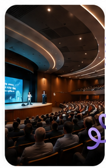

مدیریت مقالات
ارسال، ویرایش و پیگیری وضعیت مقالات در یک محیط منظم.
همایش یار یک سامانه یکپارچه برای مدیریت همایشها، ارسال مقالات، داوری، برنامهریزی و ارتباط با نویسندگان است.
از ارسال مقاله تا تصمیم نهایی و برنامه روز همایش، همه مراحل را با یک تجربه کاربری یکپارچه مدیریت کنید.
مشاهده امکاناتارسال، ویرایش و پیگیری وضعیت مقالات در یک محیط منظم.
ارجاع مقاله، ثبت امتیاز و مشاهده وضعیت داوری با شفافیت کامل.
جلسات، سخنرانیها و زمانبندی رویداد را ساده مدیریت کنید.
آمار مقالات، پذیرش، رد و عملکرد سامانه را یکجا ببینید.

هدف همایش یار این است که فرآیند برگزاری همایشهای علمی و حرفهای را برای دبیرخانه، نویسندگان و داوران سادهتر و شفافتر کند.
با تمرکز روی تجربه کاربری، امنیت و سرعت، بستری فراهم کردهایم تا هر مرحله از برگزاری رویداد با کمترین پیچیدگی انجام شود.
بیشتر بخوانیدفرآیند ارسال و پیگیری مقاله را همین امروز شروع کنید.